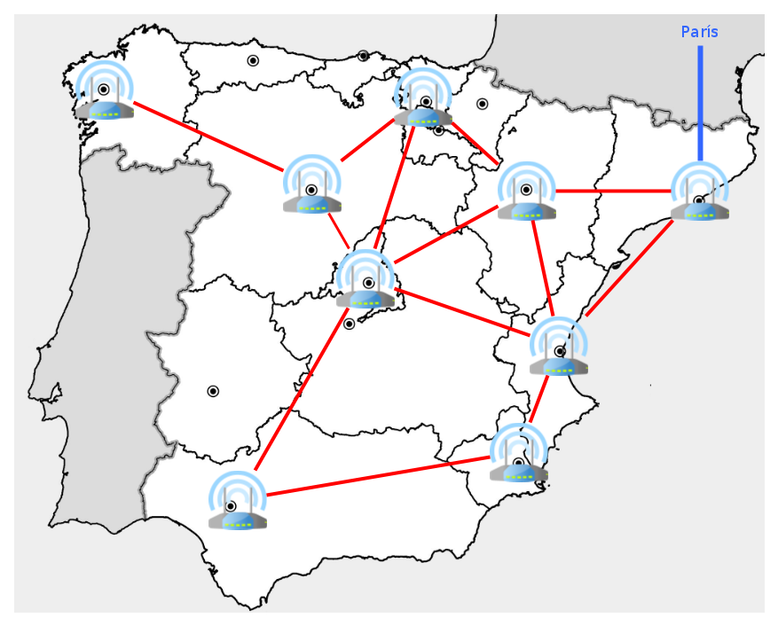
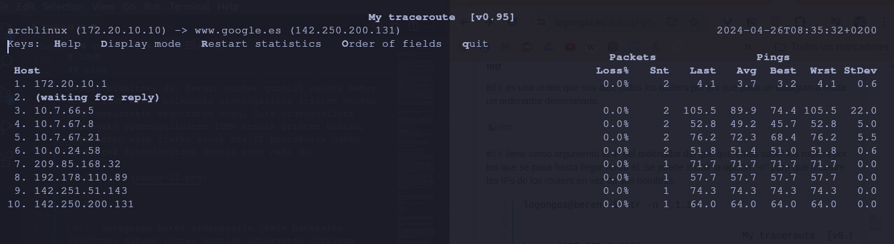
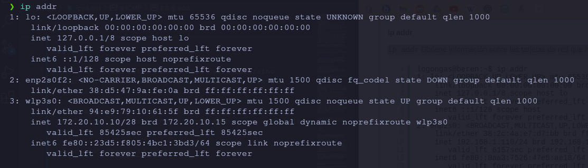
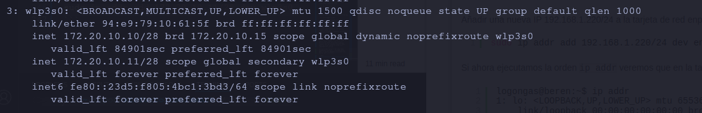
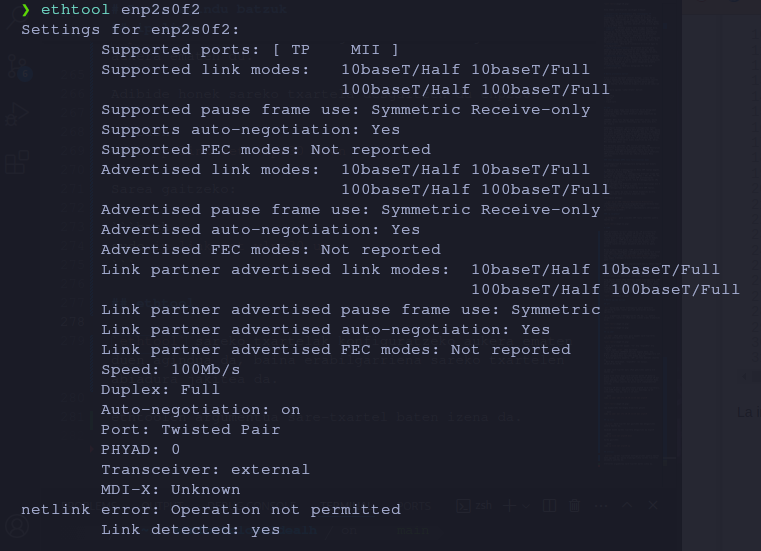
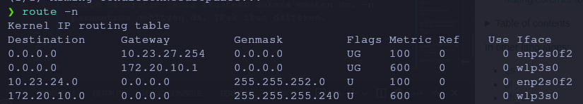

IPv4 protokoloa
IP protokoloa
Imajinatu Internet hasiberri bat Espainian. Router bakoitza autonomia-erkidego bakoitzeko Espainiako unibertsitate batean dago, eta gela bakarra dago router horri konektatuta. Routerren arteko lotura horrela geratuko litzateke.

Erreparatu munduari konektatzeko irteera bat dagoela Bartzelonako routerretik Parisera (urdinez margotuta).
| Jatorria |
Helmuga |
Jauziak |
Jauzi kopurua |
| Valencia |
Castilla-Leon |
Valencia, Madrid, Castilla-Leon |
3 |
| Valencia |
Castilla-Leon |
Valencia, Aragón, País Vasco, Castilla-Leon |
4 |
| Valencia |
País Vasco |
Valencia, Madrid, País Vasco |
3 |
| Valencia |
País Vasco |
Valencia, Aragón, País Vasco |
3 |
| Valencia |
Aragón |
Valencia, Aragón |
2 |
| Valencia |
Aragón |
Valencia, Cataluña, Aragón |
3 |
| Valencia |
Cataluña |
Valencia, Aragón, Cataluña |
3 |
| Valencia |
Cataluña |
Valencia, Cataluña |
2 |
| Valencia |
Cataluña |
Valencia, Madrid, Euskadi, Aragón, Cataluña |
5 |
| Valencia |
Murcia |
Valencia, Murcia |
2 |
| Valencia |
Murcia |
Valencia, Madrid, Sevilla, Murcia |
4 |
| Valencia |
Murcia |
Valencia, Cataluña, Aragón, Euskadi, Castilla-Leon, Madrid, Sevilla, Murcia |
8 |
Jauziak = routerrak , nondik igarotzen den, jatorritik helmuga iristeko.
Ikus dezakegunez, bide asko daude jatorrizko routerretik helmugako routerrera iristeko. Zein aukeratzen duzu routerra? Hainbat estrategia daude:
- Aukeratu jauzi gutxien dituen bidea.
- Aukeratu banda-zabalera onena duen ibilbidea. Agian, Kataluniara iristeko hobe da Aragoitik barrena egitea, banda-zabalera hobea baitago Valentzia eta Aragoi artean eta Aragoi eta Katalunia artean, Valentzia eta Katalunia artean zuzenean baino.
- Banda-zabalera, atzerapena, karga, fidagarritasuna: aukera bakoitzaren ezaugarri gehiago nahastea, ibilbiderik onena aukeratzeko.
Benetan ez zaigu interesatzen jakitea routerrak nola aukeratzen duen ibilbide onena. Garrantzitsuena da datagrama bakoitzerako routerrak ibilbide onena zein den aukeratzen duela, baina hurrengo datagramarekin beste ibilbide bat aukera dezakeela, nahiz eta helmuga berera joan.
Adibideak
Jarrai dezagun Valentziako ordenagailu batetik Kataluniako beste ordenagailu batera mezu bat bidaltzearen adibidearekin. Mezu horrek 2 datagrama ditu, Datagrama A eta Datagrama B. deituko diegu eta gerta daitekeenaren zenbait kasu ikusiko ditugu.
1. kasua: Datagramak nahasiak iristen dira
- Gure ordenagailutik bi datagrama sortzen ditugu
- Gure ordenagailuak A Datagrama Valentziako routerrera bidaltzen du
- Valentziako routerrak Kataluniarako bideean trafiko handia dagoela ikusten du, beraz, Zaragozako routerrera bidaltzen du.
- Zaragozako routerrak A datagrama jasotzen du, bere RAM memorian gordetzen du eta, denbora duenean, berriz bidaliko du
- Gure ordenagailuak B Datagrama Valentziako routerrera bidaltzen du
- Valentziako routerrak ikusten du jada ez dagoela pilaketarik Kataluniarako bidean, beraz, B Datagrama bidaltzen du zuzenean Kataluniako routerrera.
- Kataluniako routerrak B Datagrama jasotzen du Valentziatik eta Kataluniara bidaltzen du helmuga ordenagailura
- Zaragozako routerrak A Datagrama Kataluniako routerrera bidali du
- Kataluniako routerrak A Datagrama jasotzen du Zaragozatik eta helmuga ordenagailura bidaltzen du
- Zer gertatu da? Lehenengo B Datagrama heldu da eta gero A Datagrama. Laburbilduz: Datagramak nahasita irits daitezke.
2. kasua: Datagramak dal daitezke
- Gure ordenagailutik bi datagrama sortzen ditugu
- Gure ordenagailuak A Datagrama Valentziako routerrera bidaltzen du
- Valentziako routerrak Kataluniarako bide zuzenean trafiko handia dagoela ikusten du, beraz, Zaragozako bidaltzen du.
- Zaragozako routerrak A datagrama jasotzen du, bere RAMean gordetzen du eta, denbora duenean, berriz bidaliko du
- Gure ordenagailuak B Datagrama Valentziako routerrera bidaltzen du
- Valentziako routerrak ikusten du jada ez dagoela pilaketarik Kataluniarako bidean, beraz, Datagrama B bidaltzen du zuzenean Kataluniako routerrera.
- Kataluniako routerrak B Datagrama jasotzen du Valentziatik eta Kataluniara bidaltzen du ordenagailura
- Txartel-bideratzaileak, B Datagrama Kataluniara birbidali aurretik, akats bat du eta berriz hasten da.
- Zaragozako routerra berriz hasi ondoren, ez du A datagrama bidaltzen, A datagrama RAMen biltegiratuta zegoelako eta berriz hastean galdu egin delako.
- Zer gertatu da? Zaragozako routerrak A Datagrama galdu duela. Laburbilduz: Datagramak gal daitezke
3. kasua: Datagramak bizkoiztu daitezke
- Gure ordenagailutik bi datagrama sortzen ditugu
- Gure ordenagailuak A Datagrama Valentziako routerrera bidaltzen du
- Valentziako routerrak Kataluniarako bide zuzenean trafiko handia dagoela ikusten du, beraz, Zarbonatik bidaltzen du.
- Zarbonako routerrak A Datagrama jasotzen du, bere Disko gogorrean gordetzen du eta denbora duenean berriz bidaliko du
- Gure ordenagailuak B Datagrama Valentziako routerrera bidaltzen du
- Valentziako routerrak ikusten du jada ez dagoela pilaketarik Kataluniarako bidean, beraz, B Datagrama bidaltzen du zuzenean Kataluniako routerrera.
- Kataluniako routerrak B Datagrama jasotzen du Valentziatik eta Kataluniara bidaltzen du ordenagailura
- Txartelezko routerrak B Datagrama bidaltzen du Kataluniara, baina bere disko gogorretik ezabatu aurretik, akats bat du eta berriz hasten da.
- Kataluniako routerrak A Datagrama jasotzen du Zaragozatik eta Kataluniara bidaltzen du ordenagailura
- Zaragozatik routerra berriz hasitakoan, berriro bidaltzen du B Datagrama, oraindik bere disko gogorrean gordeta baitzegoen.
- Kataluniako routerrak A Datagrama jasotzen du Zaragozatik eta Kataluniara bidaltzen du ordenagailura
- Zer gertatu da? Bada, Zaragozako routerrak bi aldiz bidali duela A Datagrama. Laburbilduz: Datagramak bikoiztuta irits daitezke.
4. kasua: Datagramak bukleetan sar daitezke
- Gure ordenagailutik bi datagrama sortzen ditugu
- Gure ordenagailuak A Datagrama Valentziako routerrera bidaltzen du
- Valentziako routerrak Kataluniarako bide zuzenean trafiko handia dagoela ikusten du, beraz, Zaragozatik bidaltzen du.
- Zaragozatik routerrak A Datagrama jasotzen du, bere Disko gogorrean gordetzen du eta denbora duenean berriz bidaliko du
- Gure ordenagailuak B Datagrama Valentziako routerrera bidaltzen du
- Valentziako routerrak ikusten du jada ez dagoela pilaketarik Kataluniarako bidean, beraz, B Datagrama bidaltzen du zuzenean Kataluniako routerrera.
- Kataluniako routerrak B Datagrama jasotzen du Valentziatik eta Kataluniara bidaltzen du ordenagailura
Zaragozako routerrak uste du Kataluniarekiko sarea erorita dagoela, eta B Datagrama bidaltzen du Euskadiko routerrera.
Euskadiko routerrak A Datagrama saria jaso zuen Zaragozatik eta Madrilgo routerrera bidali zuen
Madrilgo routerrak A Datagrama saria jaso du Euskal Herritik eta Zaragozako routerrera bidali du
... eta hor begizta amaigabe batean sartzen gara...
Begizta hautsi egiten da datagramak jauzi gehiegi egin dituenean. Jauzi gehiegi egin dituen datagrama bat ikusten duen routerra (hau da, router askotatik igaro dena) baztertu egiten du, eta ez du berriro bidaltzen.
Zer gertatu da? Zaragozako routerrak gaizki bideratu duela Datagrama. Laburbilduz: Datagramak bukle batean sar daitezke, baina kasu horretan ezabatu egiten dira.
IPv4 protokoloaren ezaugarriak eta gabeziak
Azkenean, azalpen asko eman ondoren, laburbildu dezagun zertarako balio duen IP protokoloa.
IP protokoloaren ezaugarriak
- Helbideratze unibertsala: IP helbideari esker, ordenagailu guztiak identifika ditzakegu eta, horrela, informazioa banan-banan bidali ahal izango dugu.
- Bideratzea: Bideratzaile eta bideratze-taulei esker, ordenagailu batetik bestera irits gaitezke, Internet oso erosoa izan arren.
IP protokoloaren akatsak
- Datagramak nahasita irits daitezke
- Datagramak gal daitezke
- Datagramak bikoiztuta irits daitezke
- Ez da zehazten zein programatara doan informazioa. Hori xehetasun handiagoz ikusiko dugu TCPa ikustean, baina orain kontuan hartu behar da.
Ethernet trama baten formatua ikusi genuen bezala, orain IPv4 datagrama baten formatua ikusiko dugu.

Hona hemen interesatzen zaizkigun eremuak:
- Jatorrizko IP helbidea eta helmugako IP helbidea: Bi datu interesgarrienak dira. Ikus dezakegunez, bakoitzak 32 bit okupatzen dituzte, eta hemen dago Interneteko IP kopuruaren muga. Muga hori aldatu nahi badugu, munduko router guztiak aldatu behar dira, tamaina berri bat onar dezaten, eta horixe egiten ari dira IPv6-rekin.
- Datuak: Benetan bidali nahi ditugun datuak dira.
- TTL. Datagrama batek egin ditzakeen jauzien kopurua da. Hasierako balioa 64koa izatea gomendatzen da. Datagrama bat Host batera iristen den bakoitzean (ordenagailua edo routerra), beherapen-balio hori eguneratzen da 1ean. Host batera 0 balioa duen datagrama bat iristen denean, ez da berriro bidaltzen, nahiz eta harentzat bada onartzen duen.
- Checksum: CRCa dute transmisio-errorerik egon ez dela egiaztatzeko.
- Burualdearen luzera: Burualdeak hartzen duen denbora. 32 biteko multiploetan neurtzen da. Hau da, 1eko balioak adieraziko luke 32 bit okupatzen dituela, 2ko balioak 64 bit okupatzen dituela, etab.
- Guztizko luzera: datagrama osoa okupatzen duenean, goiburua eta datuak batuz. Bytetan neurtzen da. Hau da, 1eko balioak 8 bit (1 byte) okupatzen dituela adieraziko luke, 2ko balioak 16 bit (2 byte) okupatzen dituela adieraziko luke, etab.
- Protokoloa: Adierazi datagrama TPC edo UDP protokolorako den.
Beste protokolo batzuk
Orain Linuxen aginduak ikusiko ditugu. Linuxi buruz zerbait badakizue edo dokumentazioa Interneten ikusten baduzue, erraza da gauza bera egiteko beste agindu batzuk ematea. Urte askotan erabili izan diren zaharrak dira.
Hauek dira agindu "zaharretako" batzuk:
- arp
- ifconfig
- netstat
- route
- traceroute
ARP
Ordu arte ikusi dugu nola bidaltzen diren datagramak routerren bidez, ethernet erabiliz komunikazio fisikorako. Hau da, dena Ethernet bidez bidaltzen da Hosts artean.
OHARRA: Beti hitz egingo dugu Etherneti buruz, baina benetan sareko edozein teknologia da, hala nola Wifi, 3G, etab.
Komunikazio honetan, jatorrizko ordenagailuak badaki bere IPa, helmugako IPa eta bere gateway-aren IPa, baina nola daki gateway-aren MAC helbidea? Hau da, ordenagailu bat beste ordenagailu batekin edo gatewayarekin zuzenean komunikatzen den guztietan. Nola dakizu zein den horien guztien MAC helbidea? Izan ere, IP protokolo egon arren, fisikoki dena Etherneten bidez bidaltzen da eta, beraz, MAC helbidea behar da.
MAC helbidea jakiteko, IPa soilik jakinda, ARP protokoloa erabiltzen da (ingelesezko Address Resolution Protocol). Ordenagailu bakoitzak tabula bat du Ip helbideekin eta MAC helbidearekin. Taula hori betetzeko ARP protokoloa erabiltzen da, IParen arabera MACa jakiteko.
Ikus dezagun ARPk nola funtzionatzen duen
A ordenagailuak B ordenagailura datagrama bat bidali behar duenean:
- Begiratu ea B ordenagailuaren MACa ARP taulan dagoen, egotekotan aurkitu dugu MACa.
- Taulan ez badago, A ordenagailuak Ethernet trama bat bidaliko du broadcast 1 helbidera (MAC = FF: FF: FF: FF: FF: FF). Trama horretako datuek ARP protokoloaren formatuari jarraituko diote, eta B ordenagailuaren IPa barne hartuko dute.
- B ordenagailuak Ethernet trama horri erantzungo dio A ordenagailuari, bere MACa bidaliz.
- A ordenagailuak MAC gehituko du bere ARP taulan.
Ohartarazi behar da aldi oro MACak ezabatzen direla, ordenagailuak sare-txartela aldatzen badu.
Informazio gehiago:
ip neighbour
ip neighbour gure Linuxeko ARP taula ikusteko aukera ematen du.

ICMP
ICMP protokolo "arraro" samarra da. IP protokoloaren gainean erabiltzen da, baina IP sareko erroreen eta informazioaren berri emateko baino ez da. Adibidez, router bati datagrama bat iristen bazaio eta ez badaki nondik bidali, ICMP mezu bat bidaliko du jatorrizko ordenagailura, helmuga iristezina dela esanez. Eta horrela routerrek jakin dezakete bide hori ez duela balio.
Baina erabiltzaile gisa, ICMP protokoloa ez da erabilgarria, helmugako ordenagailu bateraino sare osoak ondo funtzionatzen duen jakiteko aukera ematen baitu. Hau da, konektatu nahi dugun ordenagailuraino Internetek funtzionatzen duen.
https://logongas.es/doku.php?id=clase:daw:si:3eval:tema16
ping
ping sareak ordenagailu jakin bateraino funtzionatzen duen jakiteko erabiltzen den agindua da. ping
Ping egiten duena IPan adierazi dugun ordenagailura ICMP mezuak bidaltzea da. Beraz, router guztiak pasatu behar ditu. ICMP mezua helmugako ordenagailura iristen denean, ICMP mezuarekin erantzuten digu. Gure ordenagailura helmugako ordenagailuaren ICMP mezuak iristen badira, etherneten sare fisiko osoak eta IP protokoloa duten routerrek funtzionatzen dutela esan nahi du.

Beste agindu batzuk
mtr
mtr datagrama batek ordenagailu jakin bateraino igarotzen dituen router guztiak adierazten dizkigun agindua da.
mtr argumentua ordenagailuaren IPa da,-n aukera serabilize, routerren IPak haien izenen ordez erakutsiko dira.


ip addr
ip addr IPak gehitzeaz gain dauden sare-txartelei buruzko informazioa lortzen du.

- Hiru sare-txartel daude: "lo" eta "enp2s0f2" eta "wlp3s0".
- Euren Ipak
inet ikus daitezke
- "Lo" txartela LOOPBACK deitzen duguna dela, eta, beraz, ez dela benetako txartela, gure ordenagailura 127.0.0.1 zenbakiarekin sartzeko modua baizik.
- Hirurak gaituta daudela, "UP" jartzen duelako ikusten da.
- Bere MAC helbideak. "enp2s0f2" ren kasuan, 38:d5:47:91:fe:0a
ip addr sare-txartel bati IPak gehitzeko aukera ere ematen du.
Orain arte ikusi dugu sare-txartel batek IP bakarra duela, baina ez dago arazorik sare-txartel berak IP bat baino gehiago izateko. Zein da erabilgarritasuna? Bada, elkarren artean ikusten ez diren sare independenteak sortzea.
Sarerari IP berri bat gehitzeako wlp3s0 sare-txartelari. (/28 CIDR duenez, bakarrik lau bit dauzkagu ip-ak esleitzeko, hau da, 2⁴-2 = 14 host)
sudo ip addr add 172.20.10.11/28 dev wlp3s0

Ipa ezabatzeko hurrengoa erabiliko genuke
sudo ip addr del 172.20.10.11/28 dev wlp3s0
ip link
ip link Sare-txartel bat gaitzeko edo desgaitzeko aukera ematen du.
Adibide honek sareko txartela desgaitzen du enp2s0
sudo ip link set wlps30 down
Sarea gaitzeko:
sudo ip link set wlps30 up
ethtool sareko txartelak konfiguratzeko aukera ematen duen agindua da, baina erabilgarriena sareko txartelen abiadura jakitea da.
ethtoolen argumentua sare-txartel baten izena da.

route
route bideratze-taula ikusteko aukera ematen du. -n parametroa gehitzen da, IPak ikus daitezen.

Ariketak
Ariketa 1
Egin Espainiakoaren antzeko mapa bat bere routerrekin, baina Europa mailan. Gutxienez 8 router jarri beharko dituzu, eta batzuetan 2 konexio baino gehiago egon beharko dira beste router batzuekin. Mapak herrialde bakoitzera Internet nola iristen den erakusten duen adibide bat izan beharko du. Egiten duzun mapak koherentea izan beharko du Espainian dagoenarekin. Hau da, Espainia Parisetik konektatzen da Internetera.
Bete taula hau herrialde batetik bestera iristeko 2 adibiderekin, eta adibide bakoitzerako bi ibilbide desberdin egon behar dira (jauziak).
| Router jatorrizko herrialdea |
Router helmuga herrialdea |
Jauziak |
Jauzi kopurua |
| herrialde 1 |
herrialde 2 |
|
|
| herrialde 1 |
herrialde 2 |
|
|
| herrialde 3 |
herrialde 4 |
|
|
| herrialde 3 |
herrialde 4 |
|
|
Zure maparen arabera, asma ezazu Datagramak nahasita irits daitezkeen kasu bat Zure maparen arabera, asma ezazu Datagrama bat gal litekeen kasu bat
Ariketa 2
Erantzun IP datagrama baten formatuari buruzko galdera hauei:
- "longitud cabecera" eremuaren tamainaren arabera. Zein izango litzateke IP goiburuaren gehieneko tamaina teorikoa?
- Zure ustez, zertarako da erabilgarria "relleno" eremua?
- Zein da datagrama batek izan dezakeen gehienezko tamaina?
- Zenbat datu bidal daitezke gehienez IP datagrama batean?
- Zein da IP datagrama batek eman lezakeen jauzien muga teorikoa?
- Helmuga guztietara iritsi gaitezke 3ko TTL batekin? Ezin badugu, nora ezin gara iritsi?
- Zure ustez, zenbat routerretatik pasa daiteke gehienez Datagrama bat Interneten?
- IPv6 goiburua ikusita, nola deitzen zaio IPv6ko TTL eremuari?
Ariketa 3
Dockerreko kali linux makina erabiliz:
- Ikertu sare-txartelen izena lotutako IP eta MAC txartelekin batera
- Jakin sare-txartel bakoitzak zein abiaduratan funtziona dezakeen eta sare-txartel bakoitza zein abiaduratan ari den benetan funtzionatzen.
- Egin ping bat zure benetako ordenagailutik zure Kali Linuxeko IPra, eta egiaztatu erantzuten duela.
- Sareko txartela desaktibatzen du
- Egin ping bat zure benetako ordenagailutik zure Linuxeko IPra, eta egiaztatu jada ez duela erantzuten.
- Aktibatu sare-txartela
- Egin ping bat zure benetako ordenagailutik zure Linuxeko IPra, eta egiaztatu orain erantzuten duela.
Ariketa 4
Dockerreko kali linux makina erabiliz:
- Bilatu zure mugikorraren IP helbidea zure mugikorraren app-en batekin. Zure aplikazio-dendan "net utilities" hitza bila dezakezu
- Erakutsi ARP taula eta egiaztatu ez dagoela zure mugikorraren IPa
- Egin ping bat zure mugikorrera
- Erakutsi ARP taula eta egiaztatu orain zure mugikorraren IPa badago
Ariketa 5
Dockerreko kali linux makina erabiliz:
- Gehitu IP berri bat zure sare-txartelari
- Egin ping bat zure benetako ordenagailutik zure Kali Linuxeko IP berrira, eta egiaztatu erantzuten duela.
- Egin ping bat zure benetako ordenagailutik zure Linuxeko antzinako IPra, eta egiaztatu hark ere erantzuten duela.
- Ezabatu beste IP bat zure sare-txarteletik
- Egin ping bat zure benetako ordenagailutik zure Linuxeko IP berrira, eta egiaztatu jada ez duela erantzuten.
- Egin ping bat zure benetako ordenagailutik zure Linuxeko antzinako IPra, eta egiaztatu erantzuten jarraitzen duela.
Ariketa 6
Zure ordenagailutik 8.8.8.8 ipraraino datagramak bidali behar badituzu,
- Zenbat jauzi (pasatzen den router kopurua) egiten dira 8.8.8.8 IPra iritsi arte?
- Zein da datagramak igarotzen duen lehen routerraren IPa?
- Zein da datagramak igarotzen duen azken routerraren IPa?
Ariketa 7
Erantzun galdera hauei:
- Irudikatu gure institutuko sarearen administratzailea zarela, eta, beraz, institutuko switch eta routerrak kudeatzen dituzula. Internet ez badabil. Nola jakin dezakezu oso erraz nondik gertatu den akatsa?
- Ping agindua soilik erabiliz, azaldu nola jakin zenezakee zein routerretatik pasa den datagrama bat.